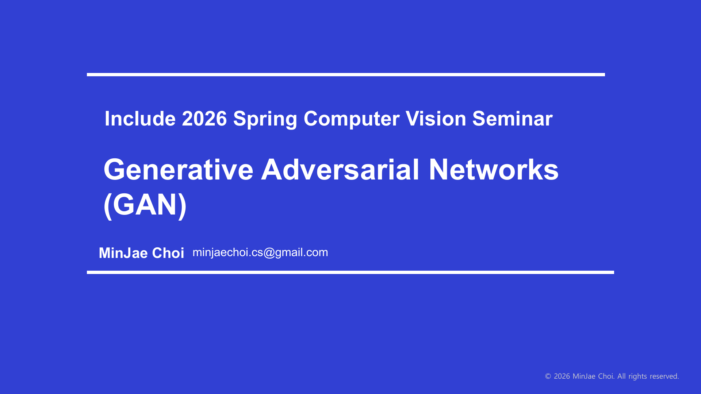
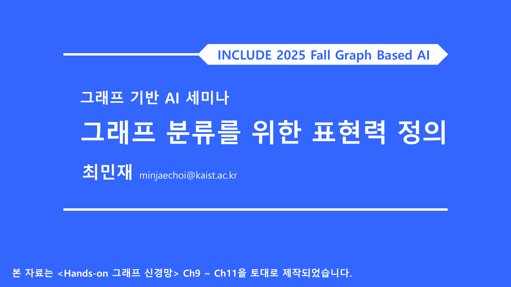

Blog
Short technical notes, seminar materials, and presentation slides.
-

KAIST Include 2026 Spring Computer Vision SeminarSlides for a seminar on Generative Adversarial Networks hosted by Include, KAIST's AI club.
-

KAIST Include 2025 Fall Graph AI SeminarSlides on expressiveness, link prediction, and generation in Graph AI.